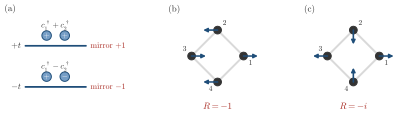
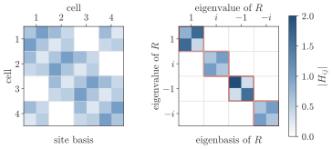

Advanced Quantum Materials 2027 · All lectures · Lecture notes
Session 2. Symmetries, Tight-Binding Band Structure Theory, and Effective Models
2.3 Symmetry operators in a formal way
What does it mean that a Hamiltonian has a symmetry, and what does this give us? We arrive at the commutator \([H,S]=0\) of the Hamiltonian with the operator \(S\) of the symmetry. For an \(S\) that is unitary, as in (2.1), \(H\) and \(S\) then have a common eigenbasis, and every eigenvalue of \(S\) is a phase.
To make the argument from electromagnetism precise for a quantum system, we need three objects. The first is a wavefunction \(\psi\). The second is the transformed wavefunction \(\phi = S\psi\) that we obtain when we apply a symmetry operation. The third is the operator \(S\) itself, which is a linear map from one to the other and a matrix in a finite-dimensional representation. A concrete case makes this clear. If \(\psi\) is a \(p_x\) orbital and \(S\) is a \(90^\circ\) rotation, the transformed state \(\phi = S\psi\) is a \(p_y\) orbital. This means that the two lobes on the \(x\)-axis are rotated into two lobes on the \(y\)-axis. Note that this \(p_x\) orbital is not an eigenstate of the rotation, since it is mapped to a different state.
The symmetry operators of this session are unitary. In physical terms, a symmetry is only a change of labels of our reference frame, for example a rotation of the axes. Any such change of labels must keep the norm of every state in the Hilbert space. In equations,
\[S^\dagger S = S S^\dagger = \mathbb{1}, \qquad S^\dagger = S^{-1}. \tag{2.1}\]
A direct consequence is that all the eigenvalues of \(S\) have unit modulus, since \(\langle\psi|S^\dagger S|\psi\rangle = \langle\psi|\psi\rangle\) gives \(|\lambda|^2=1\) for any eigenvalue \(\lambda\). So a symmetry eigenvalue can always be written as a pure phase,
\[S|\psi\rangle = e^{i\varphi}|\psi\rangle, \qquad \varphi \in (-\pi,\pi]. \tag{2.2}\]
Before we include a Hamiltonian, let us look at two small examples. We take a wavefunction with real, staggered values \((+1,-1,+1,-1)\) on four sites on a ring. We apply a \(90^\circ\) rotation that moves the amplitude of each site to the previous site, in a cyclic way. The transformed wavefunction is \((-1,+1,-1,+1)\), which is \(-1\) times the original. So this state is an eigenstate of the rotation with eigenvalue \(-1\), that is \(\varphi=\pi\) in (2.2). Now we take a complex wavefunction \((+1,-i,-1,i)\) on the same ring and apply the same rotation. The transformed wavefunction is \(-i\) times the original, so it is an eigenstate with eigenvalue \(-i\), that is \(\varphi=-\pi/2\).
A ring has four sites. The rotation \(R\) moves every amplitude to the previous site, \((R\psi)_j=\psi_{j+1}\), with \(\psi_5=\psi_1\). What is the eigenvalue of the state \((1,i,-1,-i)\)?
Show the answers
- A. ✓ True
This is true. The shifted state is \((i,-1,-i,1)\), which is \(i\) times the original. So the state is an eigenstate with eigenvalue \(i\), that is \(\varphi=\pi/2\) in (2.2).
\[S|\psi\rangle = e^{i\varphi}|\psi\rangle, \qquad \varphi \in (-\pi,\pi]. \tag{2.2}\]
- B. ✗ False
This is false. The shifted state is \((i,-1,-i,1)\). An eigenvalue \(-i\) would give \((-i,1,i,-1)\), and the first components \(i\) and \(-i\) differ.
- C. ✗ False
This is false. An eigenvalue \(1\) would leave the state unchanged, but the first component goes from \(1\) to \(i\). The state with eigenvalue \(1\) is \((1,1,1,1)\).
Applying the rotation once and comparing with the original state gives the eigenvalue directly.
The next example is less visual but more useful in practice. A two-site tight-binding Hamiltonian with a single hopping \(t\) between sites 1 and 2,
\[H = t\left(c_1^\dagger c_2 + c_2^\dagger c_1\right),\]
has two eigenstates, the symmetric and antisymmetric combinations \(c_1^\dagger+c_2^\dagger\) and \(c_1^\dagger-c_2^\dagger\). Under the mirror symmetry that exchanges sites 1 and 2, the symmetric state has eigenvalue \(+1\) and the antisymmetric state has eigenvalue \(-1\). This means that different eigenstates of the same Hamiltonian can have different eigenvalues under the same symmetry. Schematic 2.3 shows the eigenvalues of the dimer and of the two rings.

Each picture is a state on a ring of four sites. Each arrow is the complex amplitude on its site. The small axes give its real and imaginary parts. Which state is an eigenstate of the rotation by \(90^\circ\)?
Show the answers
- A. ✗ False
This is false. After three steps of \(60^\circ\) the last site has \(180^\circ\), so the step from the last site back to the first is \(180^\circ\) and not \(60^\circ\). The rotation then multiplies the sites by different phases. Four equal steps must add up to a multiple of \(360^\circ\), and \(4\times60^\circ=240^\circ\) is not one.
- B. ✓ True
This is true. All the arrows have the same length, and each one is turned by \(90^\circ\) from the one before, also from the last site back to the first. So the rotation multiplies every amplitude by the same phase.
- C. ✗ False
This is false. The arrows turn by \(90^\circ\), but their lengths are \(1\) and \(1/2\). The rotation puts an arrow of length \(1\) on a site that had \(1/2\), while a phase does not change a length, since \(|e^{i\varphi}|=1\).
An eigenstate of the rotation has the same length on every site, and the same turn from each site to the next.
We now come to the central fact of this session. Let us assume that a Hamiltonian is invariant under a symmetry operation, \(SHS^{-1} = SHS^\dagger = H\). We multiply this from the right by \(S\) and get \(SH=HS\), which is the same as the statement that \(H\) and \(S\) commute.
A Hamiltonian \(H\) with the symmetry \(S\) commutes with it,
\[[H,S] = 0. \tag{2.3}\]
For a unitary \(S\), as in (2.1), every eigenstate of \(H\) can then be chosen so that it is also an eigenstate of \(S\), with an eigenvalue \(e^{i\varphi}\) as in (2.2).
From linear algebra we know that two operators that commute have a common eigenbasis. So whenever (2.3) holds, every eigenstate of \(H\) can be chosen so that it is also an eigenstate of \(S\). This is the most important idea of this session. The reason for this is that the eigenstates of a symmetry operator are often much easier to classify than those of the Hamiltonian, since their eigenvalue is a phase by (2.2). In practice, this means that to find all the symmetries of the Hamiltonian is the first step to solve it, and the most useful one, not a side remark. Once we know that a matrix \(S\) commutes with \(H\), to classify the eigenstates of \(S\) is the same task as to classify the eigenstates of \(H\).
The steps From the commutator (2.3) to a common eigenbasis
The first step is the eigenvalues of \(S\). If \(S\psi=\lambda\psi\), then (2.1) gives
\[\langle\psi|\psi\rangle=\langle\psi|S^\dagger S|\psi\rangle=|\lambda|^2\langle\psi|\psi\rangle,\]
so \(|\lambda|=1\) and \(\lambda=e^{i\varphi}\), which is (2.2).
The second step is the simplest case, a level of \(H\) with one state. We take \(H\psi=E\psi\) and apply \(S\). By (2.3)
\[H(S\psi)=S(H\psi)=E\,(S\psi),\]
so \(S\psi\) is an eigenstate of \(H\) with the same energy \(E\). The level has only one state, so \(S\psi=\lambda\psi\) for a number \(\lambda\), and \(\psi\) is an eigenstate of \(S\).
The third step is a level with \(d\) orthonormal states \(\psi_1,\dots,\psi_d\). The same line shows that \(S\) maps each of them into the level, \(S\psi_a=\sum_b s_{ba}\psi_b\) with \(s_{ba}=\langle\psi_b|S|\psi_a\rangle\). The \(d\times d\) matrix \(s\) is unitary, so we can diagonalize it. Its eigenvectors are combinations of the \(\psi_a\), so they still have the energy \(E\), and they are eigenstates of \(S\). We do this level by level, and we get a basis of common eigenstates.
As an example, the ring of four sites with the hopping \(-t\) has the level \(E=0\) with the two real states \(a=(1,0,-1,0)/\sqrt2\) and \(b=(0,1,0,-1)/\sqrt2\). They are not eigenstates of the rotation, which maps \(a\) to \(-b\) and \(b\) to \(a\). Inside the level the rotation is a \(2\times2\) matrix with the eigenvalues \(i\) and \(-i\), and its normalized eigenvectors \((a\pm ib)/\sqrt2\) are the states \((1,\pm i,-1,\mp i)/2\) of the examples above.
The last step is the matrix of \(H\) in this basis. For two eigenstates of \(S\) with \(S\psi_a=\lambda_a\psi_a\) and \(S\psi_b=\lambda_b\psi_b\), we compute \(\langle\psi_a|HS-SH|\psi_b\rangle=(\lambda_b-\lambda_a)\langle\psi_a|H|\psi_b\rangle\), which vanishes by (2.3). So \(H\) has no matrix element between two eigenvalues of \(S\) that differ.
In the eigenbasis of \(S\) the matrix of \(H\) then splits into blocks, one for each eigenvalue of \(S\), as Schematic 2.4 shows.

A Hamiltonian commutes with a unitary symmetry \(S\), so \([H,S]=0\). The state \(\psi\) is a nondegenerate eigenstate, \(H\psi=E\psi\). Which relation always holds?
Show the answers
- A. ✗ False
This is false. Take a ring of four sites with the hopping \(-t\) and the rotation \(S\). The state \((1,1,1,1)/2\) is the nondegenerate ground state, and \(S\psi=\psi\), so the overlap \(\langle\psi|S\psi\rangle=1\) is not zero.
- B. ✓ True
This is true. Since \([H,S]=0\), the state \(S\psi\) is an eigenstate with the same energy. The level is nondegenerate, so \(S\psi\) can differ from \(\psi\) only by a number, which is a phase by (2.2).
\[S|\psi\rangle = e^{i\varphi}|\psi\rangle, \qquad \varphi \in (-\pi,\pi]. \tag{2.2}\]
- C. ✗ False
This is false. For the same ground state \(E=-2t\), and \(HS\psi=H\psi=-2t\,\psi\), which is not \(+2t\,\psi\). In general \(HS\psi=SH\psi=ES\psi\), so the energy keeps its sign.
The symmetry maps the eigenstate into the same level, and a single level leaves only a phase.
An open chain of three sites has the Hamiltonian \(H=t\,(c_1^\dagger c_2+c_2^\dagger c_3+\text{h.c.})\), and the mirror \(M\) exchanges the sites 1 and 3. Write \(M\) as a matrix, check that \([H,M]=0\), and give the mirror eigenvalue of each eigenstate of \(H\).
Solution
In the basis of the sites 1, 2 and 3 the two matrices are
\[H=t\begin{pmatrix}0&1&0\\1&0&1\\0&1&0\end{pmatrix},\qquad M=\begin{pmatrix}0&0&1\\0&1&0\\1&0&0\end{pmatrix}.\]
The product \(MHM\) exchanges both the rows and the columns 1 and 3 of \(H\), which gives \(H\) back. So \(MHM=H\), and since \(M^2=\mathbb{1}\) this is \(MH=HM\). The eigenvalues of \(M\) are \(+1\) and \(-1\), again since \(M^2=\mathbb{1}\). The state with \(-1\) is \((1,0,-1)/\sqrt2\), and \(H\) gives zero on it, so its energy is \(0\). The states with \(+1\) have the same amplitude on the sites 1 and 3. In the basis \((1,0,1)/\sqrt2\) and \((0,1,0)\) of this sector, \(H\) is the \(2\times2\) matrix with \(0\) on the diagonal and \(\sqrt2\,t\) off the diagonal, with the energies \(\pm\sqrt2\,t\) and the states \((1,\pm\sqrt2,1)/2\). So the energies are \(-\sqrt2\,t\), \(0\) and \(\sqrt2\,t\), with the mirror eigenvalues \(+1\), \(-1\) and \(+1\).
The mirror turned a \(3\times3\) problem into a \(2\times2\) problem and a \(1\times1\) problem. A code that uses the symmetries of a Hamiltonian in the same way diagonalizes smaller blocks, and so it reaches larger systems.